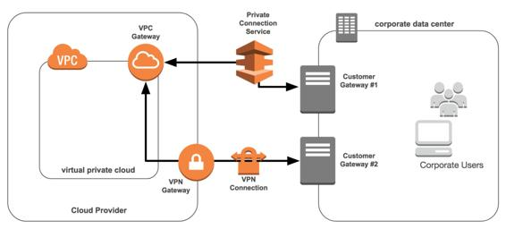

Network redundancy
Connectivity into the cloud and across all your environments should be provided in a highly available, redundant manner. There are two main implications for this in a cloud-native world. The first implication is the physical connectivity from an on-premise environment or customer into the cloud. All hypercloud providers provide a private express network connection alongside ISP partners (for example, AWS Direct Connect, Azure ExpressRoute, and GCP Cloud Interconnect). It is a best practice to back up the primary, high bandwidth connection with a failover option (another private connection or a VPN tunnel over the internet) by utilizing separate physical links.
Cloud Native Architecture Best Practice: Utilize redundant network connections into your cloud environment by using two physically different and isolated network fibers. This is especially important for enterprises that are relying on their cloud environments for business critical applications. In the case of smaller or less critical deployments, either a combination of private fiber and VPN, or two VPN links may be considered for lightweight environments.
The second implication is the redundancy of physical and virtual endpoints (both in the cloud and on-premise environment). This is largely a moot point for cloud endpoints since each of them are provided in an as-a-service gateway configuration. These virtual gateways are running on the cloud providers' hypervisor across multiple physical machines across multiple data centers. What is often overlooked is that the cloud-native mentality must extend down from the cloud to the customer endpoint as well. This is necessary in order to ensure no single point of failure exists to hobble a system's performance or availability to end customers. Thus, a cloud-native approach extends to a consumer's on-premise network connectivity. This means utilizing multiple, redundant appliances with parallel network links, mirroring the way cloud providers build out their physical data centers' connectivity.
Cloud Native Architecture Best Practice: For enterprises and business critical environments, utilize two separate physical devices on the customer side (on-premises) as the termination point of your cloud connection. Architecting for always-on in the cloud is a null point if your connection to the environment is hobbled by a hardware-based, single point of failure on the customer side.
Let's have a look at the following diagram showing connection between cloud provider and corporate data center:

When connecting from a corporate data center, office location, or customer site into a cloud environment, use redundant connectivity pathways to maintain cloud environment availability. In the event of an appliance failure, physical fiber outage, or service interruption, a redundant pathway should always be available. This can be a combination of a high cost, high performance primary line and a low cost, low performance secondary line (that is, VPN over the internet).